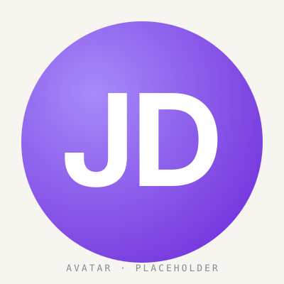
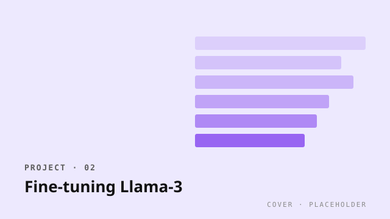
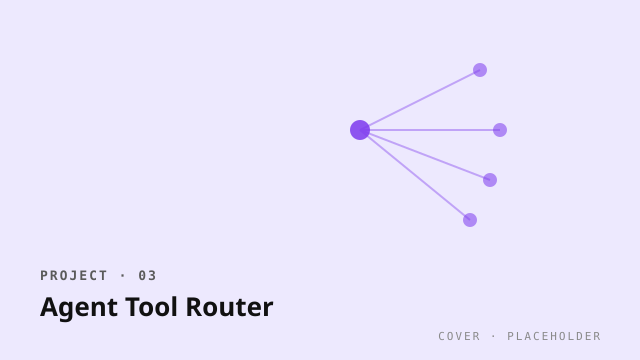

ML Engineer · LLMs & Eval Infrastructure
John Doe
I build retrieval and evaluation systems for language models — most of my work is making sure the smart-sounding answer is also the right one.
Selected work

Open source · Eval
RAG Eval Harness
A reproducible benchmark suite for retrieval-augmented systems, focused on faithfulness and citation precision. 12 datasets, judge-model agnostic.

Client work · Fine-tuning
Fine-tuning Llama-3 for a regulated domain
Adapted Llama-3-8B for medical-device documentation Q&A under HIPAA constraints. PEFT + DPO + structured eval.

Internal tool · Agents
Agent Tool Router
Latency-aware router that picks between 7 specialist tools for an internal copilot. Cut p95 by 41% vs. baseline ReAct loop.
Recent writing
All posts →-
Why most RAG evals are broken (and the one fix that helps)
Faithfulness scoring without span-grounding is closer to vibes than measurement. Here's the one thing I do differently now.
-
Notes on LLM-judge bias: what survives a paired test
Six months of A/B-ing judge models against human raters. The findings aren't flattering — for any of them.